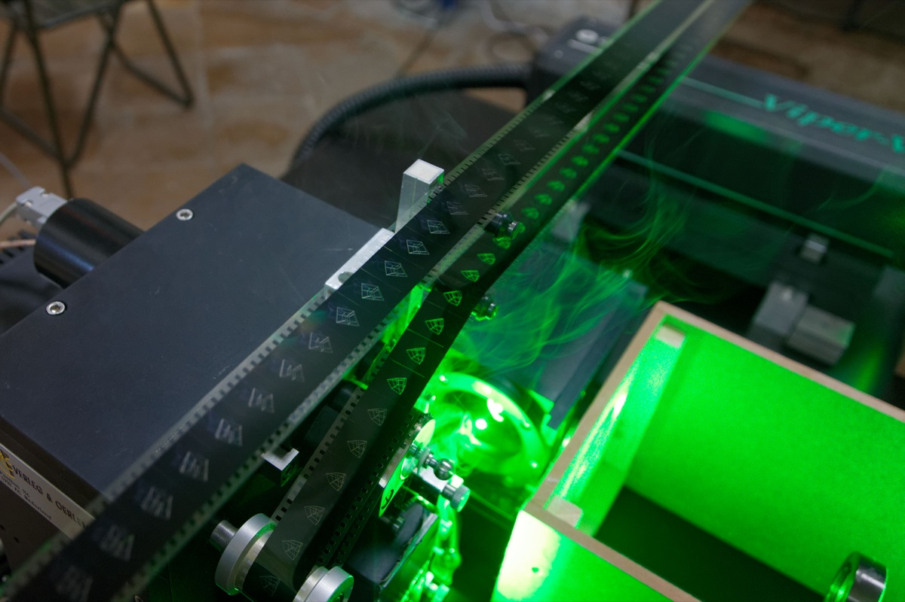
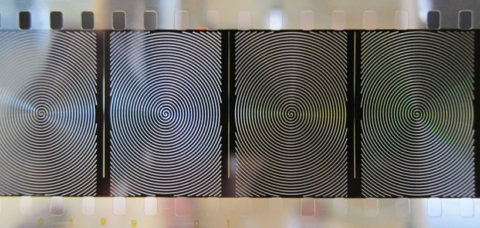
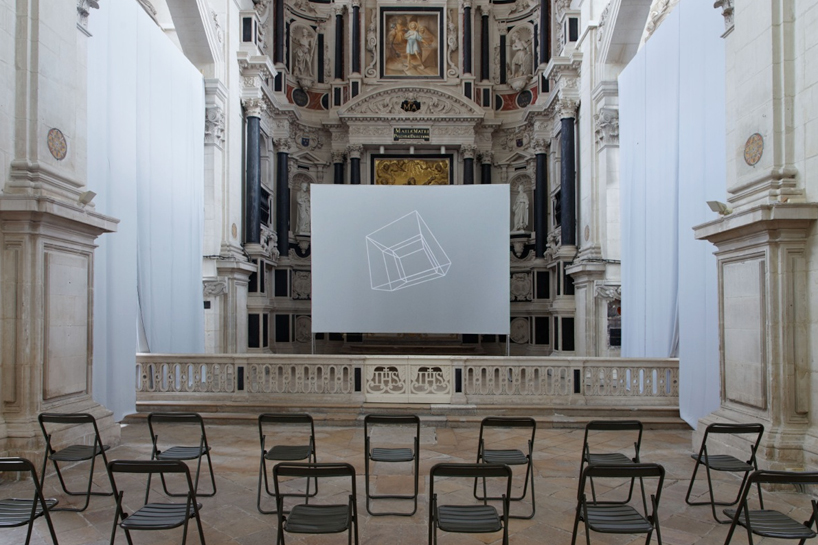

MOVING PICTURE SHOW
Jürg Lehni 2012 ~
In Moving Picture Show a scenario of production for animated drawings and texts is created by reappropriating a process normally used by the movie industry to etch subtitles into 35mm film.
A high-power laser is moved rapidly over the surface of the film, burning away the emulsion layer and leaving thin lines where only the clear base of the celluloid remains. When projected, these lines have a specific optical quality, appearing to float above the image.
The current migration from analogue to digital film projection in cinemas across the globe is quickly turning the medium of 35mm motion picture film into a niche product for enthusiasts and archival usage, rendering obsolete and for the first time making available most of the technical equipment used to produce, process and screen such films.
Changing the working range of the laser in addition to modifying, extending and partly replacing the software and hardware interfaces on such a machine leads to new possibilities: animations and full-frame drawings can be realised on top of film. The film can either consist of existing material, film created purely for this purpose, or black, non-developed film.
This potential was explored at the 23rd International Poster and Graphic Design Festival in Chaumont, where the Jesuits Chapel was transformed into a workshop and a scenario of conception, production and projection for a series of short films.
A selection of contributing artists and designers was invited to engage with this production facility, collaboratively exploring its aesthetic potential and producing films that were projected repeatedly during the festival.
Meanwhile the laser machine, also present in the chapel, was used to test new materials and ideas, as well as slowly produce new film for future screenings.
The various film works were produced in collaboration with James Goggin (US), Maximage (CH), Karl Nawrot (NL), Jonathan Puckey / Moniker (NL) and David Reinfurt (US).
The technical equipment was provided by Swiss company Titra Geneva, and a new hardware interface and software was developed in collaboration with Defekt.

"Moving Picture Show"
Jesuits Chapel in Chaumont, 23rd International Poster and Graphic Design Festival, 2012

"Moving Picture Show"
Jesuits Chapel in Chaumont, 23rd International Poster and Graphic Design Festival, 2012

"Moving Picture Show"
Jesuits Chapel in Chaumont, 23rd International Poster and Graphic Design Festival, 2012